Overview
一套可複製的空間系統，落地加州 13 家門店。
Gong cha 自 2006 年於台灣高雄創立，短短十五年間已在超過 25 個國家展店 2000 多家。本專案命名為「無限 Wu Sian」—— 既是中文「無限／無窮」之意，也呼應 Gong cha 立志成為世界第一茶飲品牌的全球擴張企圖。
問題在於：Gong cha 的門店室內設計在色彩、格局、材料與家具的選用上缺乏一致性 —— 與多位室內設計師和建築師合作造成了混亂，繁複的裝飾讓顧客對品牌形象的認知不一致。解法是定義一套統一的室內空間系統：空間規劃與品牌規範必須一致，在地採購的建材要對齊品牌的色彩與材料規範，品牌色的使用比例也被標準化。最終這套系統落地了加州 13 家門店。

本作品獲 Iron A’ Design Award（室內空間與展覽設計類，2021–2022）—— 並於七個國際設計展中展出。官方得獎頁 ↗


The Atmosphere
Concept
Santee 旗艦概念。


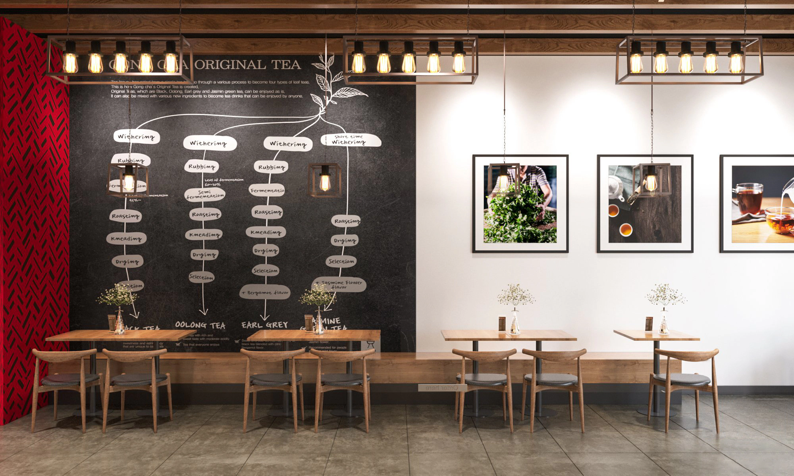
13 Stores
同一套系統，13 家門店。
從 Cerritos 到 Willow Glen，同一套空間系統在加州各地落地 —— 以下是其中一部分門店。

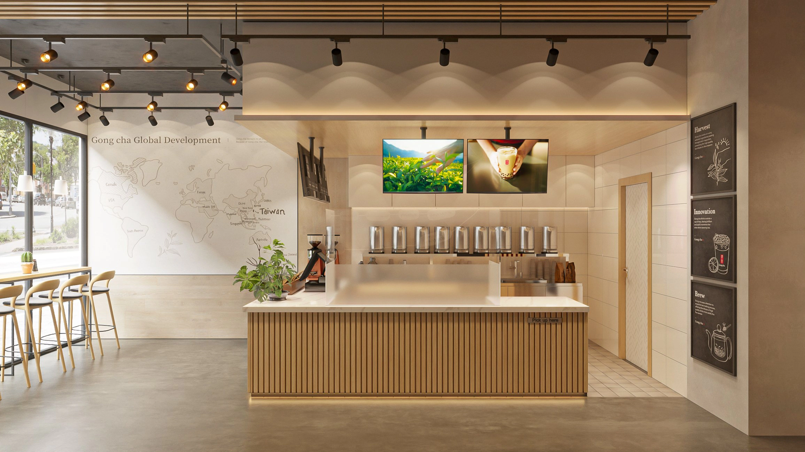

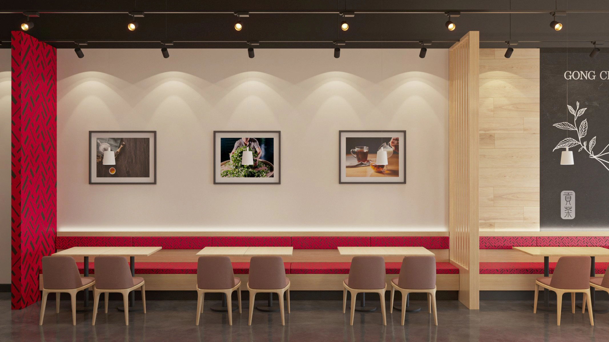

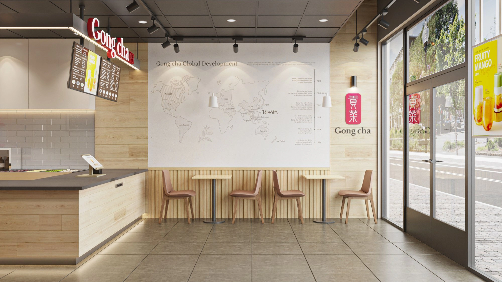

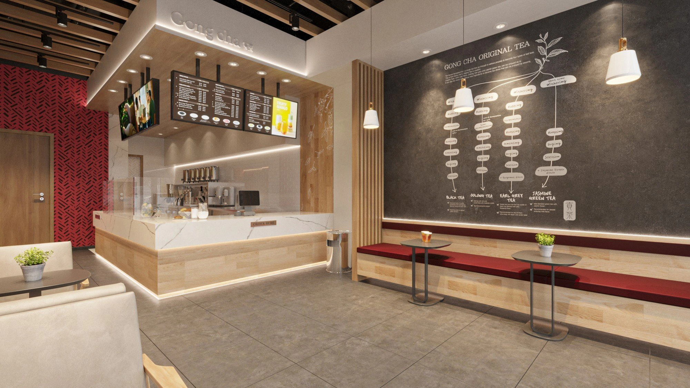

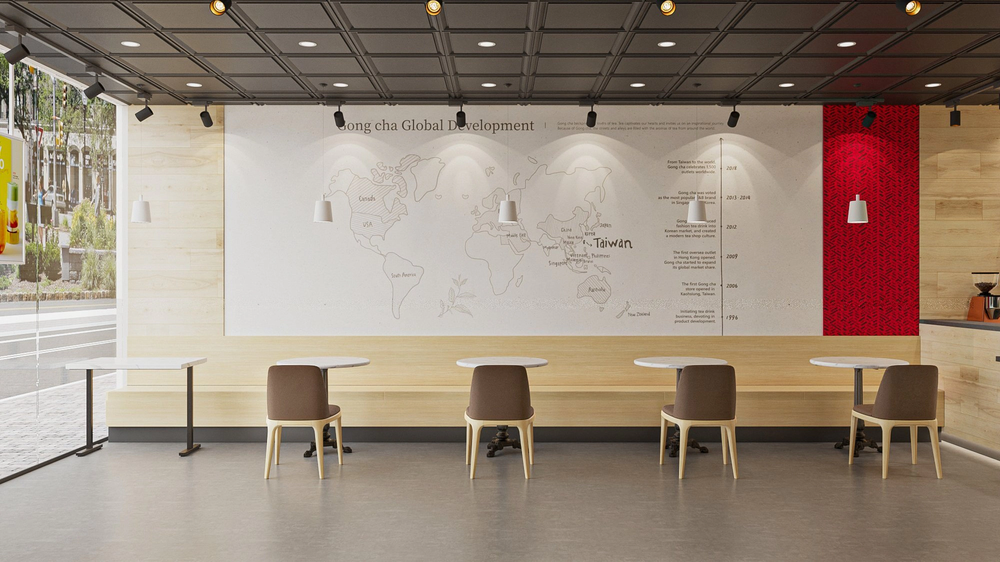

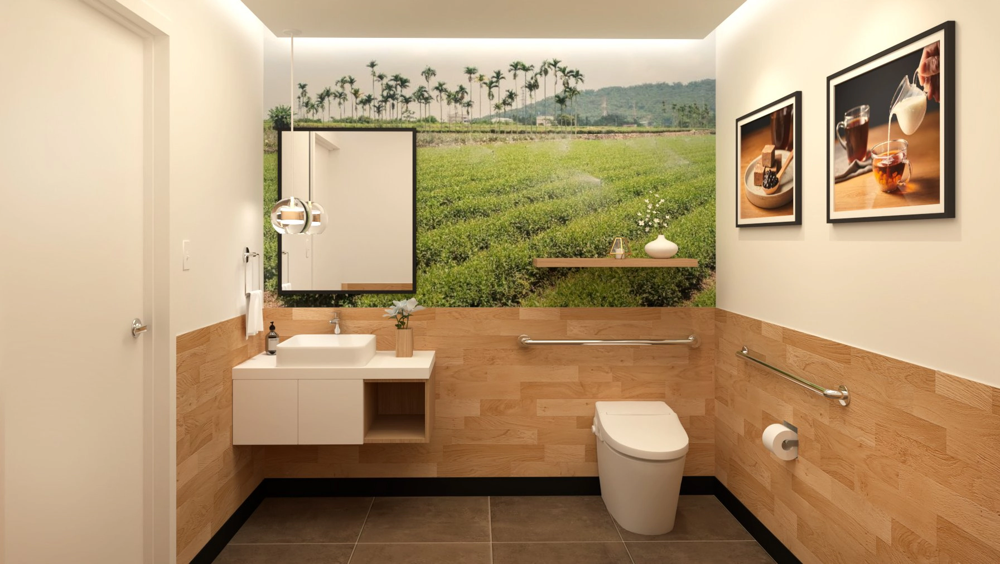

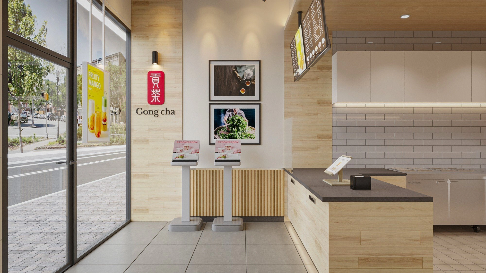

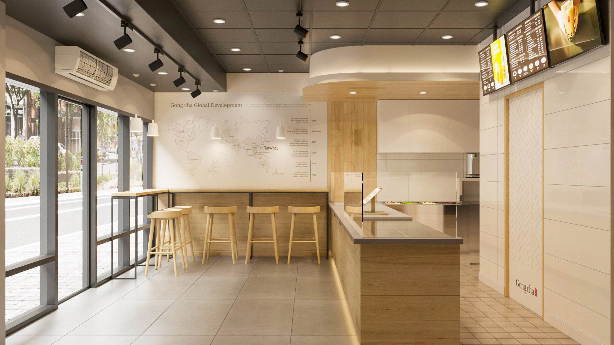

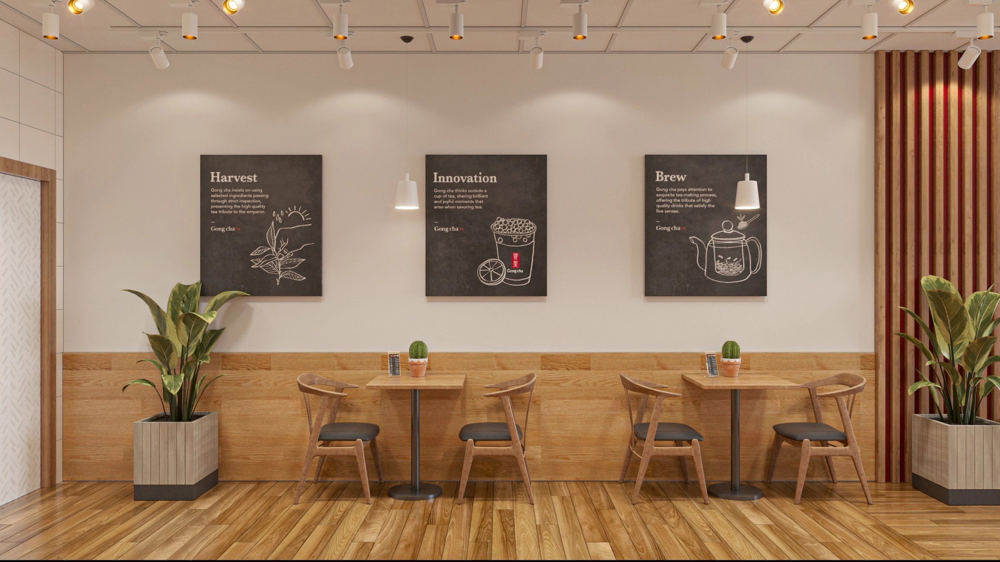

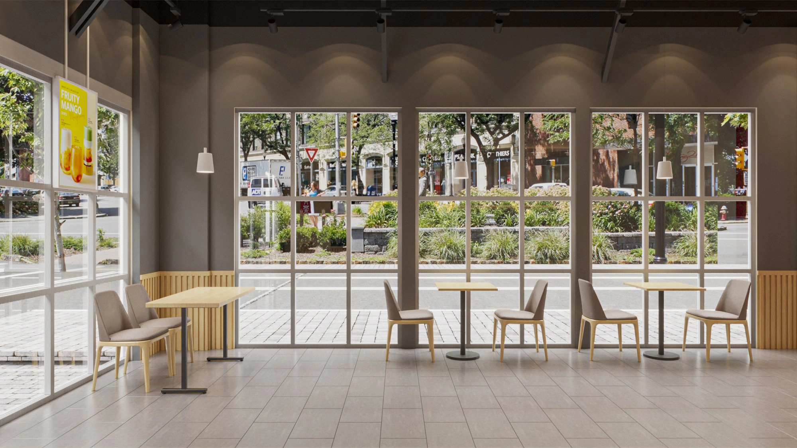


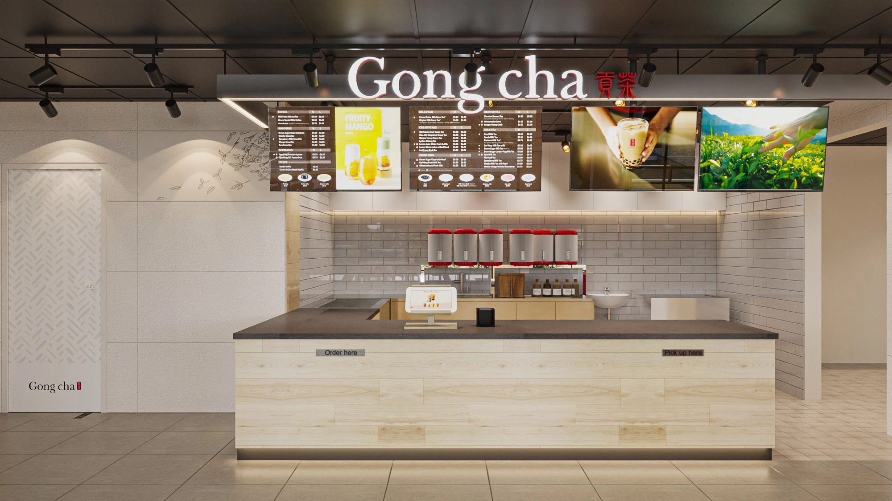
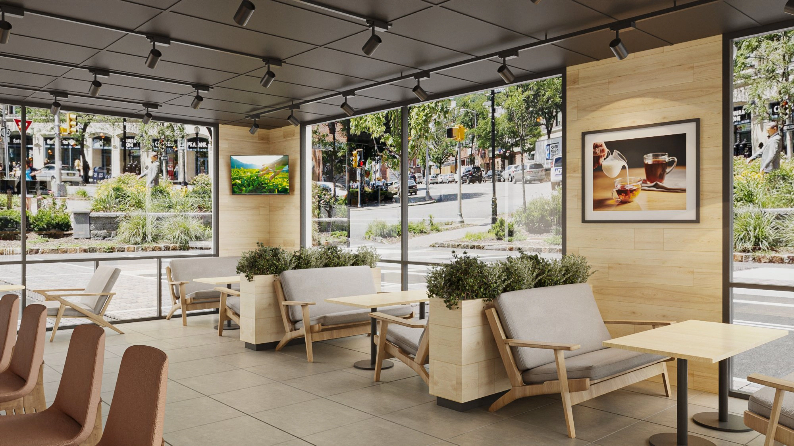
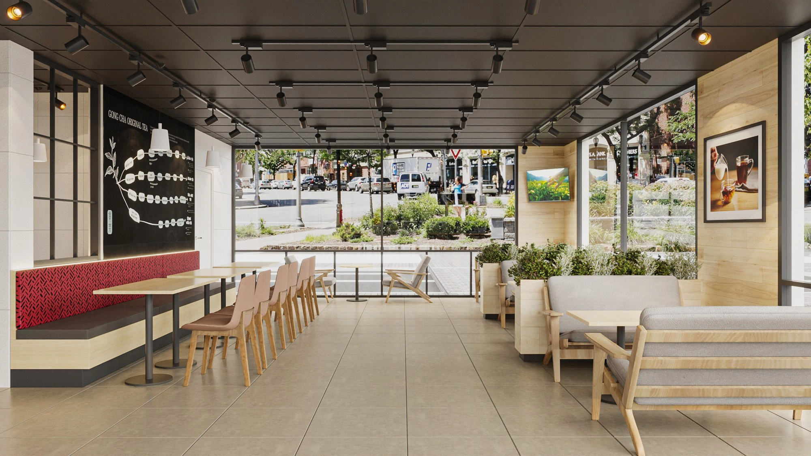
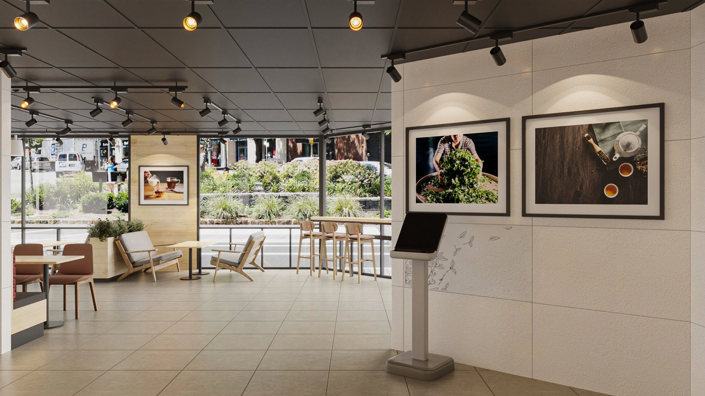
Spec Book & Kiosks
規範書與商場店中店。


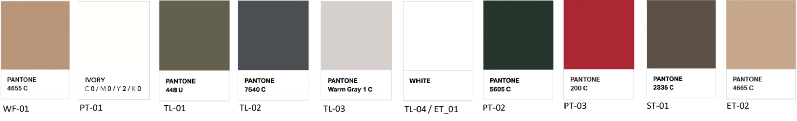
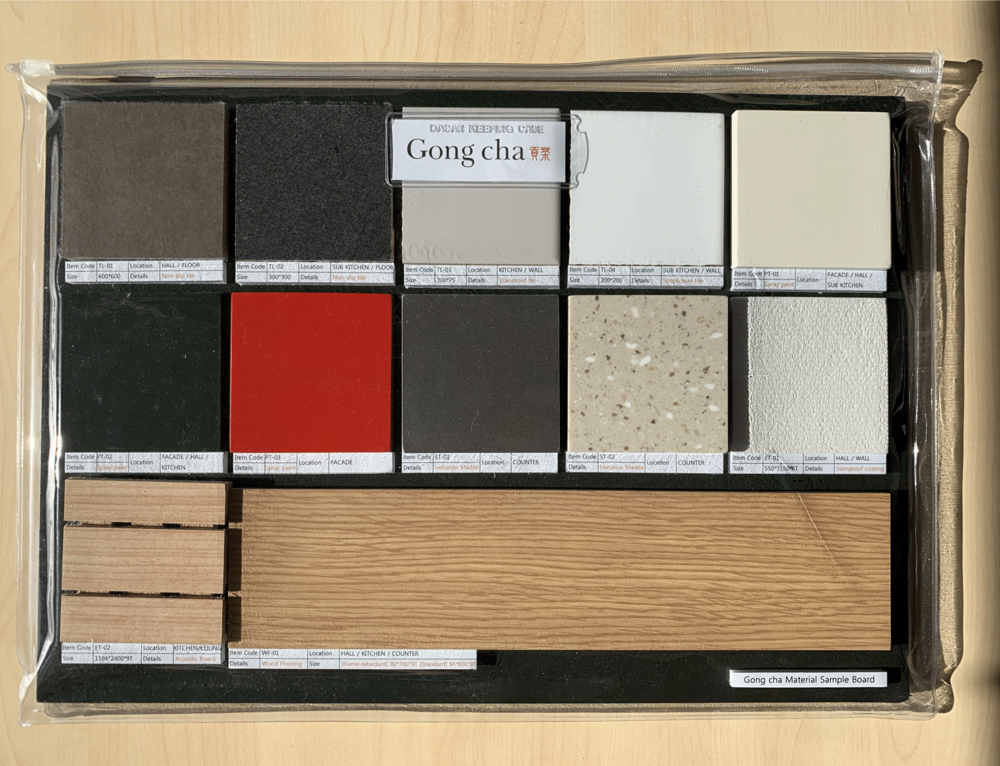
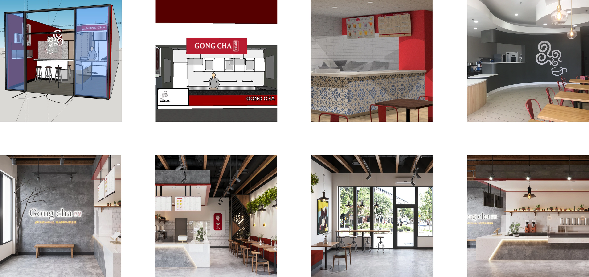


Recognition
Iron A’ Design Award，七場國際展出。
Wu Sian 商業茶館獲 2021–2022 A’ Design Award 室內空間與展覽設計類 Iron Award（#137016）。
Publication 收錄出版
- A’ Design Award —— 室內設計得獎年鑑 2022（共同作者）· DesignerPress, Italy, 51/N · ISBN 978-88-97977-50-6
Exhibitions 國際展出
- Mood —— A’ Design Award 得獎作品展
- Design Milan at Crystal Hall —— 2023 年 2 月
- 印度建築與室內設計節，NSIC Exhibition Ground —— 2022 年 11 月
- 印度建築與室內設計節，MMRDA Grounds —— 2022 年 10 月
- 河北國際工業設計週（雄安）—— 2022 年 11 月
- 河北設計中心展 —— 2022 年 12 月
- 深圳國際工業設計大展 —— 2022 年 12 月